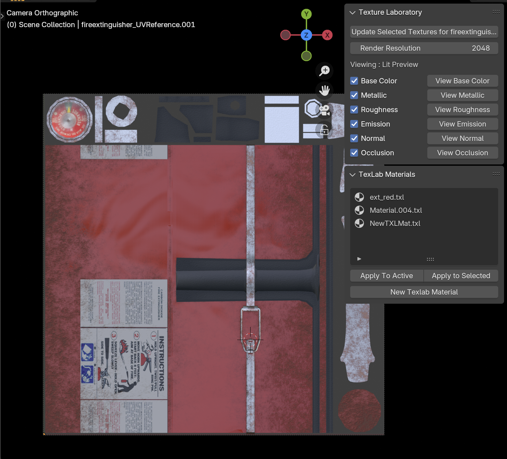
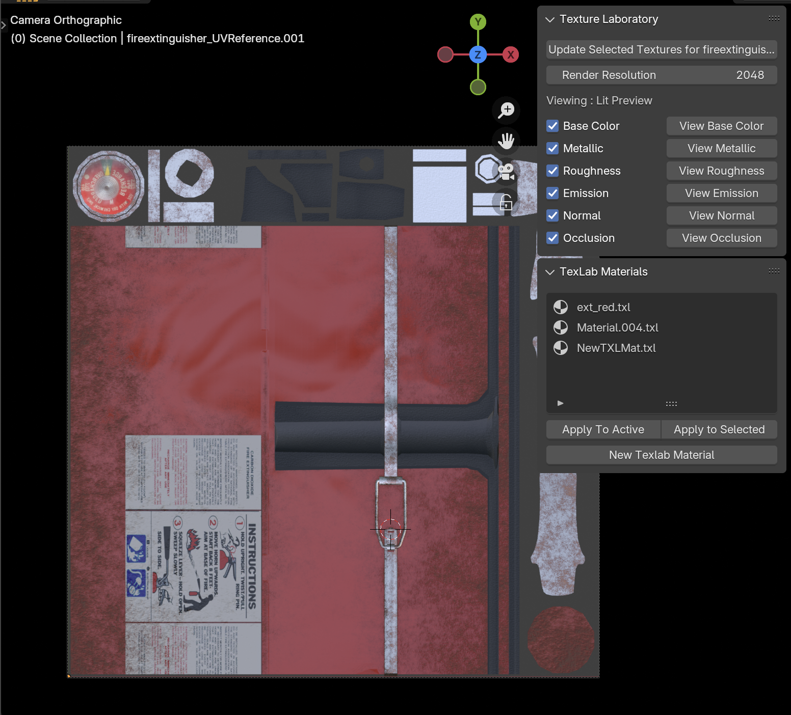
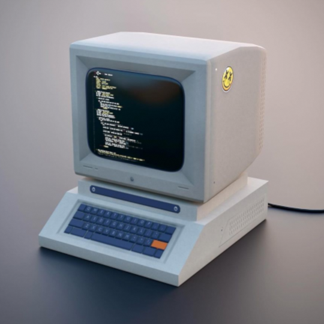
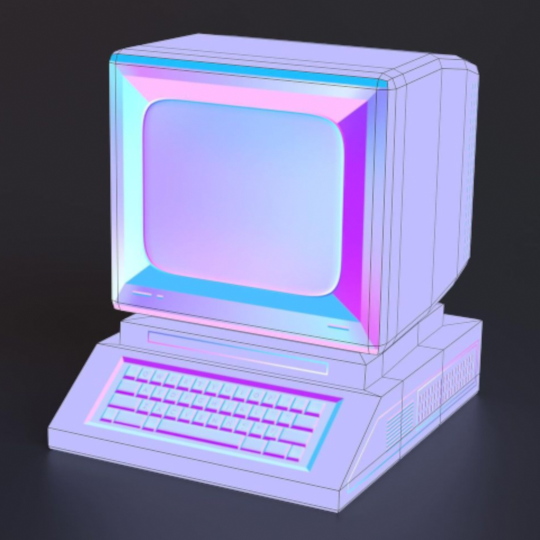
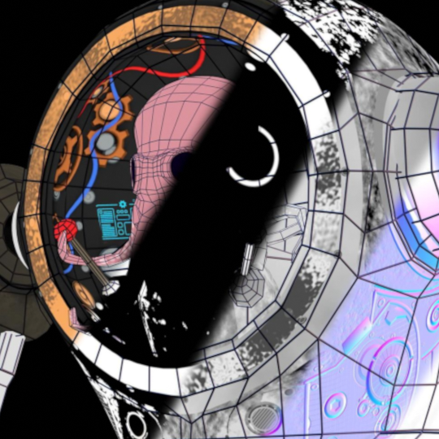
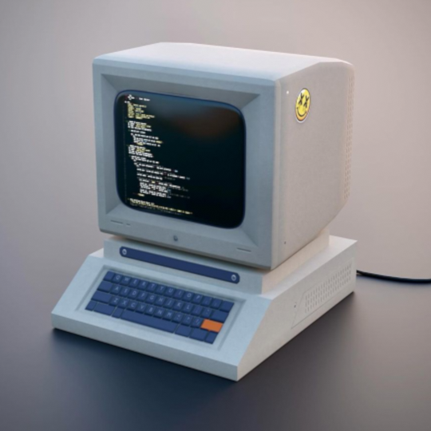
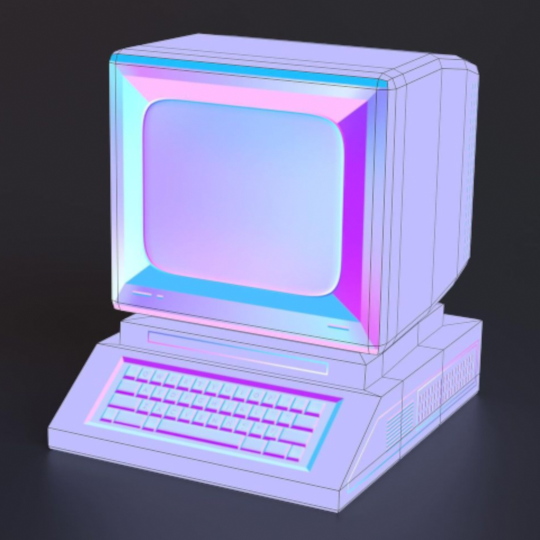
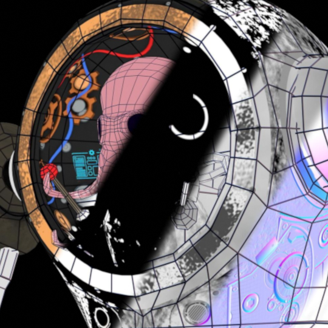

Texture Lab
DownloadTexLab is a Blender add-on that provides tools for creating game-ready texture sets using procedural generation techniques. It allows users to create detailed standard PBR maps: normal, roughness, metallic, emission, basecolor and opacity maps with a non-destructive workflow . This has been created as a my own flexible, viable alternative to Adobe Substance Painter and Designer.
Through years of using standard software for creating game textures, I have identified my favorite aspects of specific software and new techniques, and have packed this into a lightweight extension for fast and accurate asset creation all within Blender.
One specific unique aspect of Texture Lab is non-destructive normal map editing and cleanup using techniques similar to those in the (now depricated) Quixel NDO - being able to directly affect normal maps with top-down geometry. A user can import a baked normal, and apply techniques on top of this to create and edit normals that are clean, free of distortion and high quality. I believe this is an aspect available in Texture Lab which is not found in any other CG software available.
Procedural Editing
The core feature of Texture Lab revolves around a top-down representation of the UV Layout of the object being textured. I utilized a geometry node system to create this layout and keep it procedural, so when the source-model updates, the UV representation in a separate scene follows the changes automatically.
 

When working directly in the UV Laout representation, the user can swap between views live using arrow keys or by clicking a specific map-type. A 'Lit Preview' view is available as well similar to the '2D View' in Substance painter, showing the result of all PBR layers.
Nuanced Material Design
Materials may be as simple or complex as a user wants, utilizing a custom shader node 'TexLab_master', the user can plug in any procedural or image-based techniqies to create material systems.The following is an image of the fire extinguisher's base material, utilizing node groups for generating noise-based dirt and rust as well as warping paint, based on baked curvature and position in combination with realtime AO.
In contrast, this next image is a much simpler texlab material, utilizing only a baked curvature map and some noise to create a textured ABS plastic.
Takeaway:
This fire extinguisher demo is available on GitHub under 'demo_files' in the TextureLab repository, to dig through how I created each aspect of the asset. This is a good example of some of the abilities of Texture Lab, utilizing techniques such as node groups over multiple materials, utilization of images within textures, utilization of baked maps (created from my xBake tool), and a cohesive demonstration of multiple stylized material types (dielectric/nondielectric, utilization of geometry for normals and more)
Exporting Maps
When done making changes on the UVLayout representation, a user can click 'update maps for [object name]' - automatically creating a new scene if one does not already exist, isolating a copy of the model they are currently working on, and applying a new material containing the rendered maps from the UV Layout scene
The following is an example of what this automaticly created material looks like - with all texture maps hooked up to a standard Principled BSDF to represent a standard PBR material.
The user is viewing the actual map export, which has been created relative to the work file in neatly named folders. From here, users can move into their game-engine of choice, or can make further edits to the original model or material setup in the UV Layout scene, republish, and non-destructively edit their textures on the fly.
Gallery
The following are a collection of seamless material, assets and tests I have created while developing Texture Lab.


 




